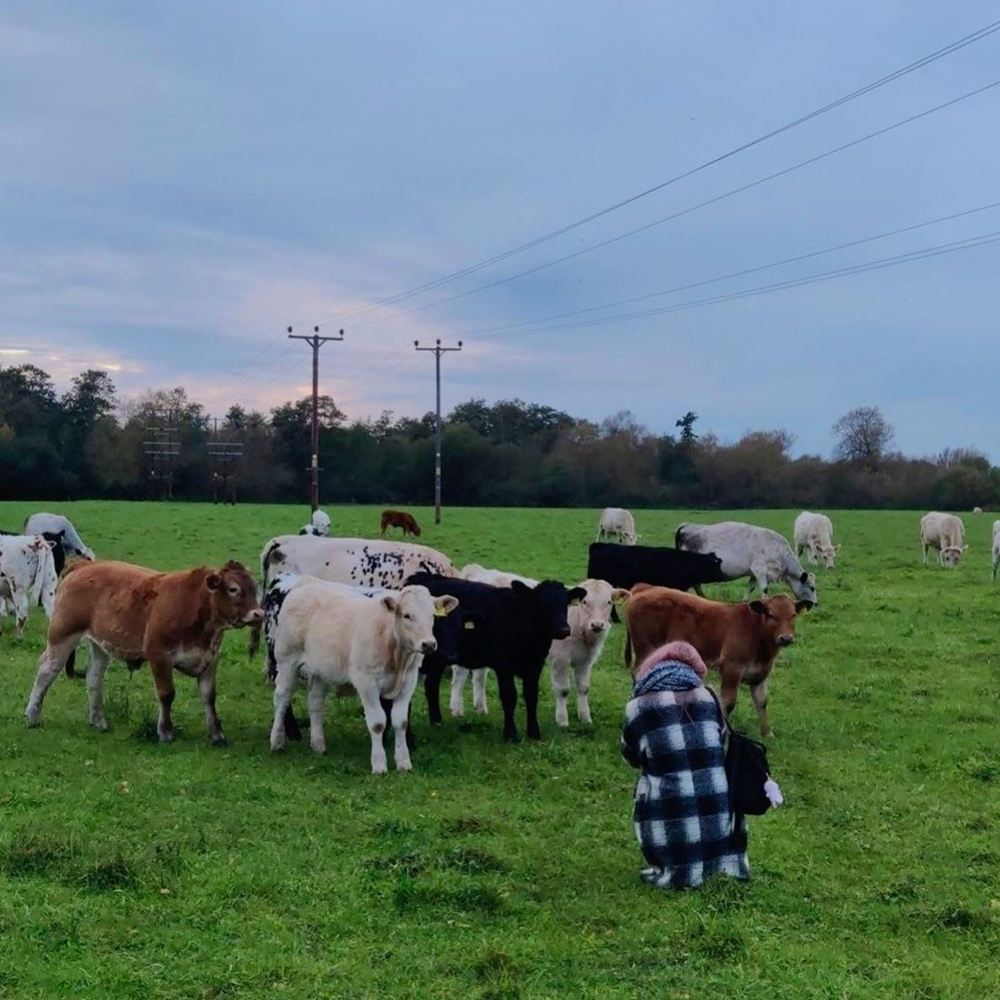

Hello, I'm Val
Student at Oxford Brookes
Owner of TypeThatArt


Hello, I'm Val
Student at Oxford Brookes
Owner of TypeThatArt
I'm 20 yo and I was born in Pskov, Russia. It's a small town not far away from Saint-Petersburg. When I was 17, my mom moved to Saint-Petersburg and I started going there often to visit her. From time to time, I also lived in Riga, Latvia, as my father is from there. And now I live in Oxford, England. I can't really say which one of these three towns (or countries) I consider to be my home now. I love each one of them. However, a place where I live in Riga has a special place in my heart. My house is in the forest in 15 minutes away from the sea. I go there often with my friends when I'm there. I love the sea. My background picture, by the way, is the photo from one of my favourite spots that I've taken myself! The sunset that day was particularly beautiful.
My favourite emoji is 🐤. Baby chicks are so cute. 🥺
When I was a kid, I really loved reading. Then I got into writing too. That is why I've chosen Media, Journalism and Publishing as my degree. Being a student quite often means that you don't really have the time to read for fun (or I'm just bad at time-management), but I still try to read when I have the chance. Now I'm reading Hard Times by Charles Dickens.
I also really love watching movies. I've watched so many of them. However, it's hard for me to really like something. So I don't have many favourite movies. But one of them is definitely Dogville.
Another thing that I just can't live without is animals. I mean, what can be better than petting a little furry adorable creature? I have a cat back
home. She is gorgeous. Her name is Alice. I haven't seen her in almost a year because the borders to Russia are still closed due to Coronavirus. I miss her.
Here is a picture of her:
 You'll see something funny if you click on her picture ;)
You'll see something funny if you click on her picture ;)
Not long ago I also made friends with some cows. Have a look:  I've stopped eating meat when I was 15 yo, but I still eat fish and sometimes consume milk products. One day I'll hopefully go vegan!
We live in a strange time when a lot of things are going on. It's important than ever to be updated. Here are some news websites I go to every day to keep myself up to date:
I also really love music. And bubble tea. My favourite is Brown Sugar Milk Boba. If you've never tried it - you must do it! You won't regret. Promise :)
Every day I try to remind myself about how lucky I am and how grateful I am for everything that I have in my life like amazing friends and family that loves me. I am happy now. And my dream is just to keep being happy, travelling the world and becoming a better version of myself.